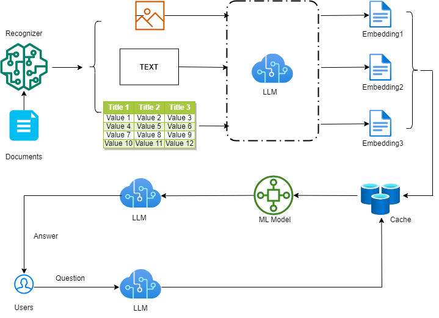

Large Language Models (LLMs) have been gaining attention in various fields, including legal analysis.
This project seeks to apply LLMs to the real estate data by introducing a novel interpretable and predictable price estimatation and recommandation system. With its capability of processing multimodal input data(image, text and table), this smart agent RealEstateGPT will facilitate the interpretation of various data sources and data formats, and effectively generate useful market analysis, property valuation and customer assistance in real estate market.
These analysis and recommandation capabilities of RealEstateGPT are achieved through targetted LLMs finetuning with domain-specific dataset and real time market information. User could not only get specific market object report, but also interactivly ask the agent for further investment recommandation in terms of real estate property.
The key idea behind a RealEstateGPT is to leverage advanced LLMs to assist in various aspects of the real estate industry. This AI-powered tool could provide valuable insights, streamline processes, and enhance decision-making for real estate professionals, investors, and buyers. The core functionalities and benefits are:
1. Market Analysis and Insights
Trend Analysis: Identify and analyze market trends based on vast amounts of data from multiple sources, including historical prices, sales data, and economic indicators.
Neighborhood Analysis: Provide detailed insights into neighborhood characteristics, including amenities, crime rates, school ratings, and demographic information.
2. Property Valuation
Automated Valuation Models (AVMs): Generate accurate property value estimates by analyzing comparable sales, market conditions, and property attributes.
Price Predictions: Predict future property values based on market trends, economic forecasts, and other influencing factors.
3. Customer Assistance
Virtual Assistance: Offer potential buyers and renters a virtual assistant to answer questions, provide property recommendations, and schedule viewings.
Personalized Recommendations: Suggest properties to buyers and investors based on their preferences, budget, and investment goals.
4. Investment Analysis
ROI Calculations: Provide detailed return on investment (ROI) analyses for potential investment properties.
Risk Assessment: Evaluate and highlight potential risks associated with real estate investments, including market volatility and property-specific issues.

1. Data Preprocessing: clean and preprocess input unstructured data with cognitive recognization model to extract meaningful information
2. Embedding: extracted data in different format are converted to unified embeddings with fine-tuned LLM
3. ML Prediction: vector embeddings are fed into trained ML model to get the predictions
4. User Interaction: users are allowed to input natural language queries or commands, which the LLM then processes to interact with the embeddings.